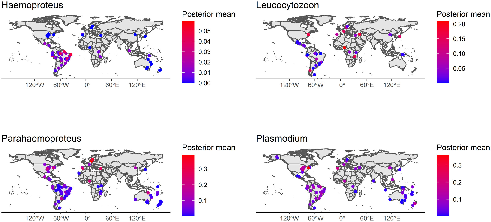

Global drivers of avian haemosporidian infections vary across zoogeographical regions
Fecchio, A., Clark, N. J., Bell, J. A., Skeen, H. R., Lutz, H. L., De La Torre, G. M., Vaughan, J. A., Tkach, V. V., Schunck, F., Ferreira, F. C., Braga, É. M., Lugarini, C., Wamiti, W., Dispoto, J. H., Galen, S. C., Kirchgatter, K., Sagario, M. C., Cueto, V. R., González-Acuña, D., Inumaru, M., Sato, Y., Schumm, Y. R., Quillfeldt, P., Pellegrino, I., Dharmarajan, G., Gupta, P., Robin, V. V., Ciloglu, A., Yildirim, A., Huang, X., Chapa-Vargas, L., Álvarez-Mendizábal, P., Santiago-Alarcon, D., Drovetski, S. V., Hellgren, O., Voelker, G., Ricklefs, R. E., Hackett, S. J., Collins, M. D., Weckstein, J. D., & Wells, K. (2021). Global drivers of avian haemosporidian infections vary across zoogeographical regions. Global Ecology and Biogeography, 30(12), 2393-2406. https://doi.org/10.1111/geb.13390

Research overview
Knowledge statements
Interpretive statements that distil key ideas and propositions from the publication to support scholarly reflection and discussion. They should be read alongside the complete peer-reviewed article rather than as standalone conclusions.
Knowledge statements are interpretive discussion points derived from the publication. They are intended to support exploration, comparison, and scholarly dialogue across the BAHE knowledge base. Individual statements are intentionally concise and should not be interpreted independently of the complete peer-reviewed publication, which remains the authoritative source for the authors arguments, evidence, and conclusions.
Infection probabilities of avian haemosporidian parasites vary substantially among zoogeographical realms and among avian host families.
Leucocytozoon, Parahaemoproteus and Plasmodium reached their highest estimated realm-level infection probabilities in the Saharo-Arabian region.
Host ecological traits often had different or opposite effects on haemosporidian infection probability among zoogeographical realms, whereas climatic effects were generally more consistent across regions.
Migration distance increased Parahaemoproteus and Plasmodium infection probability in some realms but decreased infection probability in others, demonstrating strong regional context dependence.
Local bird species richness increased Leucocytozoon and Parahaemoproteus infection probability at the global scale, but the effect of richness on Parahaemoproteus varied in direction among realms.
Larger host body mass was associated with increased infection probability for Leucocytozoon, Parahaemoproteus and Plasmodium.
Wetland cover increased Plasmodium infection probability but decreased Leucocytozoon and Parahaemoproteus infection probability, indicating parasite-genus-specific environmental responses.
Distance from the equator and annual mean temperature showed no consistent global association with infection probability for the three most prevalent haemosporidian genera.
Some low-prevalence zoogeographical realms contained pronounced local infection hotspots, showing that regional habitat and microclimatic variation can generate transmission patterns not captured by realm-level averages.
Models combining spatial effects, host phylogenetic structure and region-specific varying coefficients provided the strongest fit and predictive performance for global avian haemosporidian infection data.
Predicting future changes in avian haemosporidian infection risk requires simultaneous consideration of landscape conditions, climate, host traits, host community assembly and regional variation in their effects.
Original abstract
The original abstract is not reproduced on this BAHE page. Please consult the publisher’s version of record.
Resources
Source material and related research outputs.